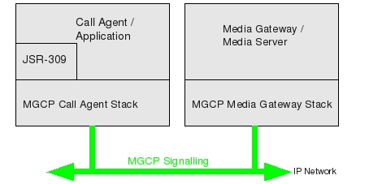

The Open Source SLEE and SIP Server
Media Gateway Control Protocol - MGCP
Introduction
MGCP is protocol for controlling media gateways (for ex., Mobicents Media Server) from external call control elements called media gateway controllers or Call Agents.MGCP assumes a call control architecture where the call control "intelligence" is outside the gateways and handled by external call control elements known as Call Agents (For example Sip-Servlets application, JAIN SLEE Application, a standalone application which may be Java or any other technology based). The MGCP assumes that these call control elements, or Call Agents, will synchronize with each other to send coherent commands and responses to the gateways under their control. MGCP is, in essence, a master/slave protocol, where the gateways are expected to execute commands sent by the Call Agents. Further details on MGCP can be found in RFC 3435
The JSR-23 provides the Java API for media gateway control in the Telecommunications and Internet industry. The API specified by the JAIN Protocol Expert Group Java Community Process Participants for MGCP are based on the MGCP Internet Drafts.
The Mobicents MGCP Stack is first and only open source implementation of JSR-23 available as of today.
The latest release of Mobicents MGCP Stack can be downloaded from here
The diagram bellow shows the high-level architecture of how MGCP is used

In addition to RFC 3435, Mobicents MGCP Stack also implements the RFC2897 which introduces advance Package for MGCP.
For Application (Call Agents) deployed as Service Building Blocks (SBB) on top of JAIN SLEE server have to use the Mobicents MGCP Resource Adaptor which uses the MGCP Stack.
Mobicents Media Server
Overview
- Forum
- Anonymous SVN
- Committer SVN
- Issue Tracker
- User Wiki
- Documentation
- Downloads
- Browse SVN
- Roadmap
Control Protocols
© 2008 Red Hat Middleware, LLC. All rights reserved. Privacy Policy